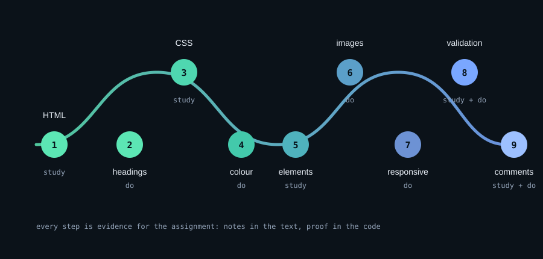

I am Tianze Tang,
studying Digital Services in Chengdu.
This website is coursework, but it is also the first time I built something a stranger can open in a browser. It started with the question “what is HTML” and ended with six pages and a URL.
Tianze Tang
Student · Digital Services
- Based in
- Chengdu, China
- Course
- Introduction to Digital Services
- Code
- DIG001IT1AE-3033
- Right now
- Learning HTML and CSS
Digital services is not just “using software”
When I chose the subject I assumed it was about getting good at tools. A few weeks in, the point turned out to be different: understanding how a service is put together — who uses it, in what situation, and exactly where the page makes them stop.
HTML and CSS are the bottom layer of that. Before, I opened a website and thought “nice” or “ugly”. Now I catch myself asking: is that three-column block Grid or Flex? What happens at phone width? Why is the menu at the top instead of the side?
So I did not use a site builder or a template for this task. Every tag here was typed by me, and every mistake was found by me. That process matters more than the result — at least now I know where to look when a page does not work.
Skills, honestly rated
Self-assessment against the course topics, not wishful thinking.
- JavaScript — so a page can actually calculate, store and search
- Accessibility — how a screen reader walks through a page
- Forms and back ends — where submitted data really goes
- Design basics — spacing, hierarchy, whitespace
All of it after HTML and CSS. Foundations first.
How this site grew

-
Read the material first
HTML introduction, the CSS demonstrations, the responsive section — page by page, copying code into a scratch file as I went.
-
Build the ugliest possible version
Black text on white, one heading, one paragraph, three links. Ugly but it opened. That step only proved the file worked in a browser.
-
Split it into six files
Once the notes got long, one page was not enough. Notes, about and practice became separate files, joined by one navigation bar.
-
Move the styles out
Everything went into
css/style.cssand was linked in. After that, recolouring the site was a single edit. -
Deal with phones
Added the viewport tag and two media queries: three columns to one, navigation allowed to wrap.
-
Publish
Pushed to a GitHub repository, switched Pages on, waited a minute. Seeing my own URL work for the first time was genuinely satisfying.
What is in it, and what is not
| Item | Detail |
|---|---|
| HTML | 6 pages, hand-written, semantic elements preferred |
| CSS | 1 external stylesheet, custom properties, two breakpoints |
| JavaScript | 0 lines — the task does not ask for it |
| Frameworks or templates | None |
| Images | 3 SVGs drawn for this project, no stock library |
| Fonts | System fonts only, nothing downloaded |
| Hosting | GitHub Pages |
Start with the notes
If you only read one page, make it the HTML notes — that is the foundation everything else stands on.